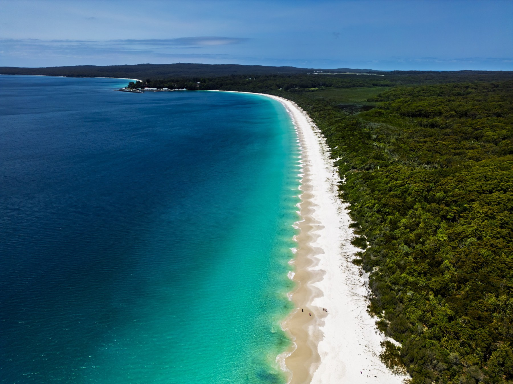
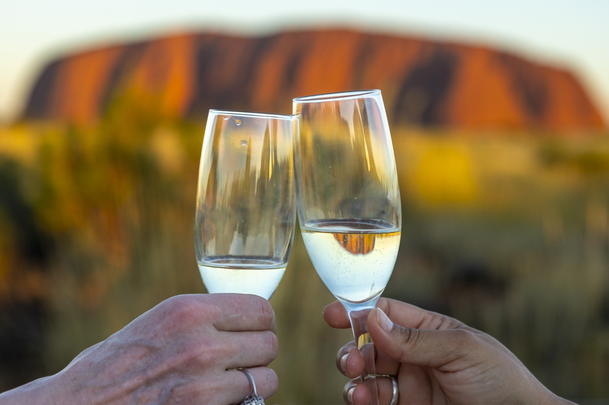
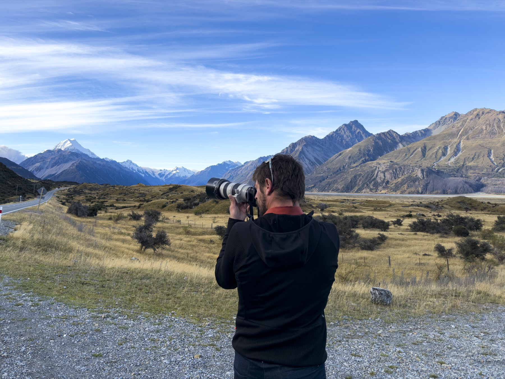

01 / THE ROAD
Travel with your guides
Show the 4×4, the route and the expertise of the people who lead it, from preparation through each day's discoveries.
Original photography and film to bring your guides, routes and hospitality to life — created with your team in Kenya and Tanzania.
Explore the proposal ↓Selected portfolio image by Juan Aizpuru · illustrative of visual style
Your journeys are built around more than a destination: local guides, a vehicle ready for the road, thoughtfully chosen stays and the freedom to travel your way.
I propose following an itinerary selected by your team to create a cohesive library of photographs and film that makes those details visible — from the first departure to the last stop.
Built around a journey you want to promote, such as your Amboseli–Tsavo–Diani itinerary. Together we choose the locations, season and guests that best fit your priorities.
Show the 4×4, the route and the expertise of the people who lead it, from preparation through each day's discoveries.
Photograph the camps and lodges, the welcome, the food and the quieter moments that shape the experience.
Connect landscapes, wildlife and the final days by the sea to help travellers picture the whole itinerary.


Photography and film organised around the journeys and experiences you choose. Your team can use the agreed material across your website, itineraries, presentations and other agreed channels.
We can also build a campaign around a particular route or audience, from creative direction through production and final edits. Scope, formats and licence are agreed with your team.
We agree on the experiences and commercial priorities you want to show.
I work with your local guides and production team. Duration and logistics follow the route and project needs.
We agree the final assets and usage licence around how your team plans to use the work.

I’d love to meet your team at FITUR and hear which White Horse experiences you would most like to bring to life.
Explore Juan’s work ↗